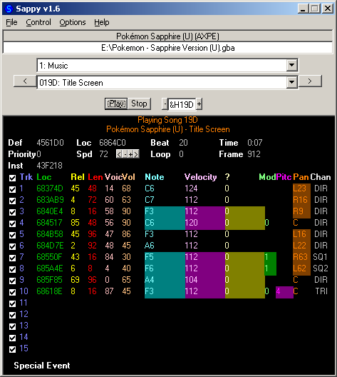

4.1 Sound
Sound exists as a wave and it was discovered long ago if you sampled the sound wave at twice the highest frequency you wanted to capture (the concept became known as the Nyquist–Shannon sampling theorem although there are others although it is fairly logical when you think of it as wanting to capture the rise and the fall of the pulse) and depending upon what you read the young and healthy human ear works up to the low 20KHz hence the 40KHz range and upwards being used for higher quality sound capture12 although the human voice is usually far lower than that limit not to mention the all sounds are not equal (higher frequencies are harder to hear) so you can often get away with sampling at a lower rate.
There are two types of audio commonly used in games (and most other places)
- Wave replication
Here you sample the wave at a given frequency (already covered) and given sample depth (usually 16 bits to allow for 65536 different options for the loudness of the wave at that point although 8 bit is used on many occasions) and through a series of various mathematical techniques depending upon the format you are using you can store and reconstruct the wave to play back later. These can be hours in length or something less than a second.
- Sound generation/trackers
Here you have a collection of sounds (either simple notes/tones or longer samples it does not matter so much) of various forms which usually get called instruments and arrange their playback (and playback speed) at runtime in effect creating music.
Each have their advantages for both audio creators and hackers.
- Waves are quite easy to rip and make sure play back exactly as you want and are quite capable of recreating sounds well enough to capture voice and more but they are not so easily controlled in game and are quite large owing to the amount of data that has to be stored.
- Sound generation is easy to control in that you can add and remove things easily, change the speed, change how loud it is played back, loop things according to actions in a game (a very potent technique) and they are usually quite small as they are only a sequence of commands a few bytes long at worst however text to audio generation aside they are generally not capable of replicating a human voice without serious processing ability being dedicated to them which rarely done.
A few terms are necessary to make the most out of audio
- Sampling - the process of picking points in time to grab snapshots of the amplitude of a wave with the aim of replaying it at a later date using just the information from the samples.
- Frequency - the amount of samples you take per second. Measured in Hertz (Hz).
- Bit depth - the amount of bits you store your sample in.
- Bit rate - in lossy compressed audio the amount of bits you aim to use over a given time period to store the audio contained within.
- Amplitude - the difference between 0/base and the current position.
- Normalising - the process of increasing the amplitude as high as it will go. Many modern tracks will have individual sections normalised.
- Noise - sounds that get picked up at various points in the system that sit on top of the audio and reduce the ability to hear it.
- Noise floor - how quiet you can get before the noise picked up by the equipment overwhelms the actual signal (usually above complete silence).
- Headroom - certain processes and capture methods result in an unavoidable amount of amplification in one form or another. Headroom is the difference between the audio and the clipping limit.
- Decibels (Db) - a logarithmic scale used to measure power of sound and other things but mainly sound as far as this is concerned. Note there is a difference between Db in audio and Db in some aspects of electronics.
The GBA and DS audio hardware With regards to playback of some of the common compressed audio formats, the GBA and DS feature somewhat limited audio hardware compared to consoles like the 360 which have hardware level support for it. That said they do have various interesting features that allow for some interesting things to be done on the both sound generation and wave replication fronts alike. The GBA BIOS also has some fairly extensive abilities and the standard DS audio format SDAT, which has its own section, also affords a lot of nice things. Additionally the GBA has a format Nintendo provided which is usually known as Sappy and, although it did not quite as much as use as the likes of the DS SDAT format, it too has serious scope for changing things and is well worth knowing about.
In practice most audio formats abstract the handling of the audio hardware to such a level that you are better off either editing the audio format directly (most are extensible enough that you can do whatever you need, quite often including changing from wave to sound generation) or editing the ROM to change what audio is played if that is your goal.
Realistically you will probably not spend as much time fiddling with the audio hardware compared to those times you hack text, levels, stats and graphics which see you do far better if you have an appreciation for the lower level concepts there. In the long run this is a good thing.
The GBA The GBA supported stereo in headphones but the actual unit only had the one speaker. The GBA has six audio channels although their uses are somewhat restricted.
The four primary channels similar to those seen on the original gameboy and gameboy color are there mainly for noise, short samples and tone generation so basically the sound generation support and the latter two (usually referred to as A and B) can be used for direct reads of wave audio, usually triggered by direct memory access (DMA) although interrupts can be used as well.
- Tone with sweep capabilities (sweep is where the frequency is changed in a continuous manner)
- Tone (no sweep capabilities)
- PCM playback for ultra short samples.
- Noise
belogic.com houses arguably the best public collection of information and worked examples on the GBA audio hardware (navigation at the top of the page). Naturally GBAtek has a fair bit on the DS sound controller as well.
Typically 1 and 3 are used and indeed that is where most of the BIOS functions (of which there are many) focus their efforts.
BIOS The GBA BIOS features several sound controller handling functions (which are not present in the DS). GBAtek has more but most are for the hardware to function properly and are what gets called to initialise and maintain the sound system, save for “SoundBias” which can change the internal sampling rate.
The DS The DS actually gained a fairly appreciable upgrade in terms of internal capabilities with support for 16 channels of audio, support for onboard PCM (8 or 16 bit) and ADPCM audio decoding, and a second speaker in hardware (the GBA also supported stereo but only for headphones).
Each of the 16 channels/registers can be told what volume to play things at and whether to pan the audio to a given speaker as well as hold and loop options for short samples. The channels 8 through 13 can be told to generate various types of PSG noise (a square wave you can change the duty cycle of) and 14 and 15 (numbers start at 0) can be used for white noise. Noise is important for various effects in audio (for one absolute silence is not something most humans can abide) and can make things sound more complex than they actually are, not to mention noise is hard to compress and being noise there is no real need for it to be repeated exactly so generating it is both useful and quite doable by “dumb” hardware.
Basic music theory One of the many sections that has guides to it longer than this one but a knowing a few things about how music has traditionally been formulated can help and much like learning a bit about how various creative works are often constructed can help you work with others in a team, put into words why you find something not to your liking or indeed why it works and more importantly give an educated guess as to the limits, design and capabilities of a given setup. Much like ROM hacking though many of these ideas and techniques are not hard and fast and those that know what they are doing can break from them to great effect although also much like ROM hacking and other scientific pursuits those attempting to take shortcuts and twist techniques without a somewhat deep understanding of why they are doing it will often come up short with little chance of being able to move backwards and make something good from their efforts.
For the most part these will be more useful for the times you are dealing with tracker type formats as other times you will usually just be injecting wave type sound of some form which if you know the header and encoding format is probably just a long winded and tedious task at worst.
Although human hearing is relatively continuous it became useful to classify certain frequencies (and multiples thereof) as notes. Typically there are seven which in most of the English speaking world and much outside it are given the letters A through G before they wrap around and start counting upwards again in the next octave which at this point is double the starting frequency. There are all sorts of relations and breakdowns after this with two of the most useful ones being the circles of fifths and the idea of musical scales.
Two or more notes (typically three) that sound like they were played together can make a chord. In general parlance a chord should be sounds that sound pleasant to the ear.
Dissonance is where notes/chords played together or the interval at which notes are played does not sound that pleasant or could be said to sound harsh. Quite often dissonance can be used but will then need to be resolved before moving to something else. As mentioned though musical “rules” can be broken to great effect with a special case of dissonance known as tritone aka the Devil’s chord forming the basis for a lot of hard rock and heavy metal.
Tempo refers to the speed at which notes are played and has large implications for how a piece of music is perceived even going to so far as to be a hallmark of a genre; in games an increase in speed will often be used in a panic scenario with the drowning/low air warning in early Sonic platformers or the increase in tempo when you near the top of a Tetris playing field being great examples. The ability to easily and controllably change tempo on the fly is then one of the main reasons sound generation has stuck around as opposed to simply opting for waves all the time.
Most music is based on repetition, anticipation and buildup and indeed most find such arrangements pleasant to listen to. A popular example of this being ignored in part is the drop where something will be played repeatedly, quite often at a faster pace for each repeat, in an attempt to build up a pattern before intentionally being halted (technically it is just a change in rhythm or occasionally the instrument doing bass as they tend to provide rhythm for a song or are perceived to) and moved into something else; sometime Tetris backing track and Russian folk song Kalinka is a fairly noted for using a drop.
Not such a concept as much as a technique commonly is used is layering where various instruments (or indeed noise) are played at all over the top of each other with the adjustment of volume levels for each and timing thereof being known as mixing. Although it is more associated with video and dubbing of audio should there be a noticeable pop as the sound recording is started or silence be replaced with some noise (often referred to as room noise) and that makes it into the final cut people have a tendency to notice. This is not so commonly seen on handhelds and older consoles but as games have gained increasingly larger amounts of voice acting this idea has not been observed as well as it might.
Today games consoles are reasonably able to play sounds even a trained ear can not distinguish from one another and thus are often afforded full compositions no different to standalone music but corners can be cut13 and ROM hackers can be called in to drag it back to form.
4.1.1 SDAT (NDS)
Although several other formats have since been discovered to be quite popular (for years the list of non SDAT games stood at less than ten) the dominant format for audio on the DS is known as SDAT.
Format overview The SDAT format is a fully featured if not very extensible or compressible audio format for the audio engine supplied with the DS SDK.
It features the ability to do tracker/midi style audio in the format known as SSEQ, short samples in the likes of SWAV and full length audio tracks in the form of STRM and anything else is a helper format to allow the above formats to do their job.
Format and formats within
- SDAT - the main format that both stores the files and stores the relations to each other.
- SSEQ - the tracker (midi) like format that plays instruments according to a scripting language.
- SSAR - archives of small SSEQ sounds. Usually used for sound effects rather than music.
- SBNK - the instruments library for SSEQ. Articulation Data can also be given to determine how a sample is read (attack, decay, sustain and release options available).
- SWAR - the library of the actual wave representations of the instruments. Every SWAV is stored in an SWAR without exception.
- SWAV - the individual wave representations of the instruments and occasionally sound effects.
- STRM - longer wave files (PCM or ADPCM) that can extend for several minutes and include full vocal audio tracks. Can be found outside the SDAT
There are a few other formats sometimes seen alongside them including SMAP and SADL but they are usually considered leftovers from the build process. Useful to look at and indeed the finding of an SMAP file played a key role in the early reverse engineering of the format but not usually necessary to do anything to for hacking purposes. SMAP files can be generated with tools like vgmtoolbox and although other parsing tools are available these are often in a very readable format.
SSEQ basics SSEQ is a scripting language of sorts aimed at tracker style audio and things people like to do there. It is probably closer to midi than some of the more advanced tracker formats like XM but unlike midi rather than an instrument being turned on and then off the instruments are called with a duration value inbuilt into the call.
The scripting commands are not always the same length, sometimes contain a payload and such so decoding them from an arbitrary point can be a bit trickier than simply reading things. You can however get a full text decoding of the format though using sseq2mid and the - l option (you might want to pipe it to a text file with >>sometextfile.txt) and VGMtoolbox will also provide the same output (it has sseq2mid as part of the toolchain).
It will produce something like
SEQ\_BGM\_C_01.sseq:
00000000: 53 53 45 51 | Signature | SSEQ
00000004: FF FE | | Unknown
00000006: 00 01 | | Unknown
00000008: EC 0F 00 00 | SSEQ file size | 4076
0000000C: 10 00 | | Unknown
0000000E: 01 00 | | Unknown
00000010: 44 41 54 41 | Signature | DATA
00000014: DC 0F 00 00 | DATA chunk size | 4060
00000018: 1C 00 00 00 | Offset Base | 0000001C
0000001C: FE 77 02 | Signify Multi Track | ***-***--*------
0000001F: 93 01 D4 02 00 | Open Track | Track 02 at 000002F0h
00000024: 93 02 D7 05 00 | Open Track | Track 03 at 000005F3h
00000029: 93 04 EF 06 00 | Open Track | Track 05 at 0000070Bh
0000002E: 93 05 23 0B 00 | Open Track | Track 06 at 00000B3Fh
00000033: 93 06 A8 0C 00 | Open Track | Track 07 at 00000CC4h
00000038: 93 09 F9 0D 00 | Open Track | Track 10 at 00000E15h
0000003D: C7 00 | Mono/Poly | Poly (0)
0000003F: E1 69 00 | Tempo | 105
00000042: 81 2D | Program Change | 45
00000044: C0 40 | Pan | 0
00000046: C5 0C | Pitch Bend Range | 12
00000048: C6 40 | Priority | 64
0000004A: CA 00 | Modulation Depth | 0
0000004C: CB 10 | Modulation Speed | 16
0000004E: CC 00 | Modulation Type | Pitch
00000050: CD 01 | Modulation Range | 1
00000052: E0 00 00 | Modulation Delay | 0
00000055: C1 7F | Volume | 127
00000057: D5 7F | Expression | 127
00000059: C0 4D | Pan | 13
0000005B: 48 6E 0B | Note with Duration | C 5 \[72\] vel:110 dur:11
0000005E: 80 0C | Rest | 12
00000060: 47 6E 0B | Note with Duration | B 4 \[71\] vel:110 dur:11
00000063: 80 0C | Rest | 12
00000065: 48 6E 0B | Note with Duration | C 5 \[72\] vel:110 dur:11
00000068: 80 0C | Rest | 12
0000006A: 43 57 0B | Note with Duration | G 4 \[67\] vel:87 dur:11
0000006D: 80 0C | Rest | 12
0000006F: 45 62 0B | Note with Duration | A 4 \[69\] vel:98 dur:11
00000072: 80 0C | Rest | 12
00000074: 47 6E 0B | Note with Duration | B 4 \[71\] vel:110 dur:11
00000077: 80 0C | Rest | 12
00000079: 48 6E 0B | Note with Duration | C 5 \[72\] vel:110 dur:11Also available is a graphical decoding in VGMtrans but editing is not really possible in VGMtrans.
Being a fairly straightforward scripting language you can then change whatever you like in whatever fashion the engine is capable of with one of the most common hacks is looping which will be covered later. High level options are available where you convert things from midi to SSEQ and use looping flags afforded by various programs however it is reasonably easy to do manually and allows for a greater range of methods.
General commands Most programming languages from assembly up to the highest level programming languages will have a huge selection of inbuilt commands but most of the time it will boil down a handful of key commands or classes thereof used over and over again. SSEQ is no different and the four main classes of item are
- Tones/instrument
- Jumps, branches and calls
- Volume and tempo manipulation.
- Mathematical and file operations
Tones/instruments do what they say and call an instrument and a length it wants to be played for. On the stock setup (if such a thing can be considered to exist) middle C is located at 60 with the range running from 0 to 127 (00 to 7F) but games can and do change the instruments not to mention have the ability to call slightly longer samples.
Jumps, branches and calls are somewhat limited compared to general programming but it allows for the construction of loops and includes loop counters and other such things.
Volume (including panning) and tempo manipulation do what they say. Maximum tempo is 240 beats per minute (see timing section in a few lines)
Mathematical and file operations are typically designed to be used to augment other areas rather than anything general purpose.
Multitrack is possible if it is declared at the start of the first track , up to 16 tracks can be done in one SSEQ.
Timing The timing engine underpinning the SSEQ sound engine stems from the ARM7 timer and works in an overflow manner where each pulse (cycle) the tempo value (units of it known as ticks) is added to a counter and if the value exceeds 240 the SDAT/SSEQ is processed processed for one instruction and 240 is taken from the counter before it starts all over again. A quarter note aka a crotchet is 48 ticks and is fixed as such.
Ripping STRM and SWAR/SWAV files can be easily converted/extracted and manipulated seen as they are little more than wave files but ripping the SSEQ tracks themselves has a variety of methods that can be used, converting too them takes some more thought and will hopefully become apparent after basic SSEQ manipulation is covered. Some of the earliest methods here after the use of loop back cables from headphones ports and emulators were tools that just attempted to translate the standard SSEQ sounds to a midi interface and it kind of worked although was often nothing like the original. Crystaltile2 has the ability to parse SDAT and supposedly play it back but for the most part it is broken so it is not mentioned as a ripping tool.
On more than a few occasions hidden tracks and tracks that did not make the final game have been recovered from games.
All the tools linked should also be open source as well.
Emulators and loopback The easiest method and often the crudest; has three main advantages in that you can mute audio tracks in emulators (and if you get creative with cheats hardware as well), you can edit the ROM to play the audio in whatever order you wish with filesystem level hacks and it also works on the occasions a custom format you do not wish to reverse engineer has appeared. Desmume has featured audio grabbing capabilities for a long time now.
SSEQ2midi loveemu
The earliest method that attempted to decode the SSEQ format into another format. It attempted to approximate the standard banks/logic to midi controllers and worked fairly well for the most part but things did not sound exactly as they did on the originals.
Usage is command line only and here is the output of the usage
usage : sseq2mid (options) \[input-files\]
options:
–help show this usage
-0 –noreverb set 0 to reverb send
-1 –1loop convert to 1 loop (no loop)
-2 –2loop convert to 2 loop
-d –loopstyle1 Duke nukem style loop points (Event 0x74/0x75)
-7 –loopstyle2 FF7 PC style loop points (Meta text “loop(start/end)”
-l –log put conversion log
-m –modify-ch modify midi channel to avoid rhythm channel
____ sseq2mid \[20070314\] by loveemu
There are also STRM and SWAR conversion tools available from the same author.
NDSSNDEXT Download mirror
Technically called NDS Sound Extractor it usually gets called for the name of the exe file (NDSSNDEXT) and it is a self contained tool for ripping DS audio files. Much like SSEQ2midi and some aspects of VGMtrans it attempts to approximate the original sounds but in a different way to standard SSEQ which frequently had better results than the original SSEQ2midi and it also converts SWAR archives by default. It is command line only and usage is quite simple
<<NDS Sound Extractor v0.3 by TENDON>>
Usage : ndssndext.exe \[options\] <file…>
Options: -x extract files only(no decoding)
-s show processing status
–help show this usage
VGMtrans (DLS) Download mirror
Arrived around the same time as NDS Sound extractor and eventually got more stable. Still used today primarily as it has the ability to create DLS files although certain programs can have issues (awave studio usually cuts through it and can put things in rmi format which carries instruments) which some midi playback methods can use to make the sounds match more closely to the original hardware; the trained ear can still tell the difference between hardware and midi DLS but it is not the night and day different the other methods often exhibit. It does also feature graphical parsing of SSEQ and similar files which is invaluable when actually editing SSEQ tracks even if you have to actually edit thing in another editor. Usage is drag and drop onto the file (SDAT or NDS) and right click on various sections to get what the allow for. GUI is quite customisable as well with toolboxes able to be dragged around at will.
PIC
vgmtoolbox Homepage
You will also need to find the relevant decoder kit (Caitsith2’s testpack.nds) that is not included with the standard download.
CRC32
FB16DF0E
MD5
3D902DED2E237D9D0A329E3BC8C0A577
SHA1
7B23ABA82BA2957B3D5FC12B4FA99F02DA6FF766
DLS files from VGMtrans are very useful so it sticks around to this day but in many ways VGMtoolbox is the best method available for ripping. Much like earlier audio formats the playback methods actually use an emulation of the DS sound hardware (foobar compatible plugins are available in vio2sf) although the playback side of things has since been abandoned so it is not up to par with the latest DS emulation.
Also features the ability to generate SMAP files and other such niceties (also highlighted green on the picture below).
PIC
NCSF This was a replacement made in 2013 to cater to some of the failings of the ageing 2sf format. Still aimed at the SDAT format it adopts a high level approach which works better in some instances.
Other tools Various tools have been made to convert to and from various things and play them back and they will be mentioned quickly
MKDS_Course_modifier
GBAtemp thread. Along the way MKDS course modifier picked up several pretty good abilities in the conversion to and from SDAT audio stakes including the ability to generate DLS files.
Kazowar’s_Player
GBAtemp thread. Although more or a playback tool than anything else Kazowar and a handful of others developed a tool that could play back the SDAT audio format on DS hardware.
swavtoswar
GBAtemp thread.A simple tool that can convert from swav to swar and from wave to swav.
midi2sseq
fincs mid to SSEQ. Usually the subject of a lot longer tutorial the idea was if SSEQ could turn to midi then midi could be turned to SSEQ. Between slightly troubled conversion and different sound banks reproduction is not always 100 percent accurate but combined with other techniques and injection methods a lot can be done and it can be used as an intermediate format for those that want some higher level editing options. Two main versions exist and additionally looping hacks are quite commonly done on top of this although the later version of midi2sseq linked there does support a lot more in that field.
tinke
Github page. Mentioned elsewhere in the guide as it has some serious abilities in a lot of fields it is definitely worth having if you are undertaking any sound work on the DS (SDAT or otherwise). It is also one of the few tools able to insert files into SDAT files and repoint accordingly.
Rebuilding Rebuilding a SDAT file after a minor edit (that changed a file length) is possible and Kiwi.DS’ NDS editor has a rebuilding option available but the reliability is suspect at best so most opt to either repoint the relevant file to the end of the SDAT file and change various lengths in the file (the SDAT length, the File Block size and the location in the FAT section).
More recently Tinke has gained a measure of injection ability (with the ability to repoint) so it is worth having a look here. Usage is quite similar to the rest of the program but the general order of operations is open the SDAT file and view it, press “Change file”, find the replacement file, repeat as necessary and finally press “Save SDAT”.
PIC
4.1.2 Others
Although SDAT is very common there are other formats used by several games and worth knowing about. There have been a few occasions where some of the SDAT stuff has been found external to an SDAT file and if there is an archive/packing format on top of the standard nitro file system the SDAT component will usually be found separate to it but not always (recall the packing example from El Tigre) but this is not what this section is about. With the exception of music games most games with that use a custom format will be a known format or at best a simple wrapper to PCM audio. Midi was seen in Rhythm N Notes but it might well have been a developer leftover.
http://gbatemp.net/threads/the-various-audio-formats-of-the-ds.305167/
DAT format Seen in Disgaea it appears to be a wrapper format for the files usually contained within SDAT. Composed mainly of .dat files which are archives starting with the magic stamp “DSARC FL” and followed by the amount of files to come (in hex) and then a listing of the file names and 0000 0100 0000 before starting the file name, size and location (each subfile is padded/aligned to 100 hex). On top of this there is a file with the extension .tbl which appears to contain various pieces of information about the files.
The SSEQ side of things is further wrapped in MSND files which start with a DSEQ section and some of the other files appear to be followed by other sections.
Procyon Audio (DSE audio format) Developer information page (Japanese)
Some notes on the format from project pokemon
Usually better known by the extension it commonly comes in known as SAD (SD and SADL as well). Seen in several notable games in the DS library including Luminous Arc and Professor Layton. In practice it is a wrapper format for some IMA-adpcm. It differs from system to system depending upon their implementation of ADPCM but for the most part it holds. Some versions (mainly ones similar to Professor Layton) are supported by the VGMstream library which has had frontends made in several programs and additionally is used by tinke.
SMD, SED and SWD Occasionally seen in wrapper formats (SIR0 in Zombie daisuki and various versions of PH in Inazuma Eleven) this is actually a sequenced format as well and one of the few to use a truly custom format to do it.
PCM audio N+ used raw PCM audio (although it is minimal the wave format does actually provide some more information). Import and export with Audacity should be possible.
Conventional wave files Electroplankton was observed to use standard windows style wave files and could be edited as such. Brothers in arms also used standard wave files but every file in the game was put into the BAR packaging format (a fairly basic offset pointer affair) first. Luminous arc despite using other formats also had a wave file for the opening section.
OGG files Some of the official wrestling games were seen to use the OGG audio format and it is popular on other systems; WWE SmackDown vs Raw 2010 was the original source and looking at some of the other information it is likely to hold for other entries in the series as well. OGG is a fairly complex format that arose in an attempt to provide an audio (and later video) compression format free from patents and the associated issues (for commercial use you may have to pay codec creators for using their format). VGMtrans can search for and extract OGG files from container formats.
ADH/AHX/ADX Cri middleware made a series of audio and video formats that first rose to prominence back on the Dreamcast although it was spotted on the DS and really came to the fore when it was seen to be used in The World Ends With You (TWEWY) which allowed remixes to be made with some simple tools.
DCDEV has ADX2WAV and WAV2ADX tools which do much of what is wanted but newer versions of Tinke also support it as does VGMToolbox (Misc. Tools -> Extractions tools -> Streams) and as popular game music format libraries have existed for a long time with support for it there are plugins and support for it in lots of places.
Cri middleware maintains a list of games that use their technology (note that not all are the audio as they do video and file management formats as well). If you want some more on how the format is implemented and some of the abilities of it there is multimedia.cx CRI ADX format discussion and multimedia.cx CRI ADX ADPCM discussion.
It should be noted they Cri middleware have made a new ADX format seen on a few PSP games known as ADX2.
Proper custom stuff This is usually reserved for music games that need extra formats as part of their method of operation although this gets closer to level formats. Taiko no Tatsujin used SDAT and a custom format known as DSB, Daigasso Band brothers which uses a format known as BDX and another called gak and has a selection of tools at Yasu soft and information at Auby.no.
4.1.3 Tracker formats
More popular in the late 1980’s and early 1990’s than right now they are none the less very closely tied to games and game/hacking culture (some people erroneously call the sort of sounds they produce keygen music with a better term being chiptunes). There are many formats but the big ones are XM, MOD (not to be confused with the DS video format or the camera video format), IT and midi although midi is not quite the same thing. As you have seen already Nintendo made their own tracker format called SSEQ which is used extensive although if you open up GBA and DS games and find something else you are more likely to find XM or MOD than any others (not that they can be dismissed lightly as s3m also featured on the GBA).
They are usually editable directly and options vary as widely as music creation does but Open MPT should get you started.
4.1.4 General rule of thumb for custom audio formats
Mentioned in passing already but worth noting properly is that although there are a handful of exceptions (mostly music games) most of the time if you see an audio format that is not SDAT it is likely one of three things
- A known complex audio format (ADX/AHX, MP3, OGG, one of the tracker formats and such)
- A wave/PCM file or a wrapper for it
- A known custom format that rose up with the DS (mainly music games).
If it is not a plain audio format (remember to match things if you change it unless you can demonstrate it works with better or worse) then chances are it will have been seen in games before. Equally if it is not one of those it will probably match the hardware quite closely.
Also and far less of a hard and fast rule it is usually SDAT format or something else entirely but some do still mix SDAT and their other formats.
4.1.5 Common DS SDAT audio hacks (undubbing, injection, tweaks and relinking)
Although much has been covered there is more and the need for some example hacks. SDAT hacking can be very simple or it can require a lot of thought and effort to do although that is usually just a matter of thinking things through as the format is fairly logical.
4.1.6 Basic undub
The basic undub is a very simple hack; you find the sdat or equivalent files in the source game (usually the Japanese version) and replace the European or North American’s SDAT file (renaming if necessary) and rebuild the ROM if you unpacked it to do it. If the sound format got changed en route (unlikely but covered later) then at best relinking will need to be done and at worst a proper header rebuild or injection (or the script is converted to the game that houses the would be sound source).
4.1.7 Relinking
Occasionally ROMs come with nice tracks for part of the game and ones someone may not like to hear at other times. An early example of this with a ROM that was hacked to alter things here is Tetris DS which had a version of the Korobeiniki (even if it was internally called Karinka (Kalinka) which is another somewhat similar sounding Russian folk song sometimes seen in Tetris games) which only played at later stages in the game and it otherwise played a selection of tracks from the original NES Mario brothers title. Knowing how to do this also forms the basis for several other types of SDAT audio format hack.
Although you could go into the game and change the relevant calls to tracks in the game there are two main ideas on how to set about changing this
- The crude way that usually works
- The slightly more complex but proper way
The crude method relies on the idea that most tracks will not deviate from the standard bank for the game so all you need to do is find the location and size markers for the file you want to change and the one you want change them to and replace as appropriate. Once you have the relevant data this quite often can be done with 20 seconds of copy and paste.
There are all sorts of methods but step zero is finding out what tracks you want to edit and be replaced by which is usually this is done by ripping the relevant audio although much like regular file finding names can quite often help you.
You could generate an SMAP file if you wanted but an output from something like Crystaltile2 is often just as helpful
PIC
The crude method sees that the relative addresses and size values contain the relevant information
Now either because you read the value from SMAP, read it from the file itself (at location 20 hex for 4 bytes there is a pointer to the FAT section) or simply searched for FAT in ASCII (every SDAT file will have it).
Going to a hex editor
PIC
007C
20A1
80BF
…..
All just the flipped numbers.
If you look back at the SDAT file readout from Crystaltile2 you will see that is the relative address. 9496 in hex is 2518 so you have the size as well.
The crude method which often works well simply copies and pastes the location and size values over the files to be changed.
PIC
The more complex method takes the idea of multiple banks into account and will change those as well else the game might try to play with a different bank which could well make for a very interesting “cover” so to speak but maybe not what you are searching for here.
On the crystaltile2 readout the final column has some data which corresponds to the relevant information for the file in approximately the same manner as an SMAP file.
The actual meanings, to use the same terminology as kiwi.DS’ SDAT specifications, are in order “file number” “bank” “volume” “channel pressure” “polyphonic pressure” “polyphonic”. FileID which is not necessarily the same as file number (fileID and file number can differ between sections as you can see in an SMAP file). What is a flag and what is just information is debatable but much like the sizes and locations in the crude relinking method it does not really matter as long as it is the correct version.
In the example SEQ_SEN_P.SSEQ was the file in question. It has the information about it in the INFO section which again you can either search for or read off from 18 hex.
Now INFO is not quite as nice as FAT but it is still well within the realms of some light copy and paste and much like everything else INFO has a header section and a pointer section before that actual data section.
The pointer section it at 40h (technically there is a pointer but it should always be at 40h as there is nothing variable before it), the first entry is the number of files and you could multiply through and calculate it (if you were making a program you probably would) but the value after is the pointer to the first entry so use that instead.
You will end up with something like the following picture (note for the sake of readability the address was shifted to the start of the INFO block)
PIC
Pulling some information from it
0000 0000 3300 6440 4000 0000
0100 0000 0800 6440 4000 0000
Looking back at crystaltile2 and accounting for hex to decimal conversions it all appears to hold
Now you do not want to replace the fileID as the SSEQ engine might use it to address the file but the rest needs sorting.
PIC
In this case it does not matter but SWAR archives contain the actually wave form representations of instructions and sound effects, they are however somewhat apart from the rest of the SDAT and will need to be handled separately. Fortunately other than relative pointers they are quite simple archives and all data on files is contained within the files themselves so no need to edit things beyond the pointers.
4.1.8 Injection
With undubbing, whole SDAT replacement, a bit of slicing files up (unlike whole replacement it allowed at least some of the original audio to remain) and relinking indicating that SDAT was a fairly resilient format the next step was to try injection of other files into the game. Much of it fairly obvious if you have a basic appreciation for the SDAT format but an example none the less.
Phoenix Wright 2 replaced with a Phoenix Wright 1 track is the order of the day here. The audio from the first game is often considered to be top notch and the second game left much of the classic audio out to the dislike of many so here injection will be used to change the a track from the second game into one as heard on the first game.
Rather nicely VGMtrans allows in place playback so
BGM070 in second game is used as the objection track (Phoenix Wright Justice for all track 7/objection if you go searching)
BGM002 from original game used (a track otherwise known as “Phoenix Wright ~ Objection! 2001”)
There are of course several ways to approach this but as one file is being replaced with another the obvious thing to do is replace one file with the other.
Basic file replacement with tinke was already covered but here is what the Phoenix Wright Justice for All SDAT will look like
PIC
Name and location of the track that wishes to be gone and the track being used to replace it. With things known it is but a few basic clicks…. it will probably play but will not sound anything like the original. This is as the SSEQ format is not standalone and in this case has three helper files (see bottom left box).
PIC
No problem just replace the other files in the same manner; the trouble comes in that the SWAR “wave_agb_bgm” is common to a few files in both games and it providing a fair few samples (the ones that match the names in this case merely seem to be house a few longer samples). Replace and damn the consequences works well enough and does indeed net the promised change and as it would seem the games are quite similar at least the opening track which is a rendition of Bach’s “Toccata and Fugue” and has only a couple of small samples works well enough with the replaced file.
The proper way to resolve the issue as straight replacement only works to a point is somewhat closer to the older methods involving a manual rebuild (or indeed trying to dodge having to rebuild). Here rather than repoint an entire file the relevant files would be added to the end of the SDAT and the files repointed to that in a similar manner to the standard repoint but alongside that the section lengths would also have to be expanded and on top of this the grouping data will need to be changed to reflect the new bank. The following is purely for the WAVE_AGB_BGM in this case as the other sample library is unique to the replaced SSEQ file; not all games will need this as some have a bank and a sample library for each song and equally some games will just have a single bank/sample library used for every sequence. Adding an entirely new file is quite tedious and long winded so another song will be sacrificed and the sample library it uses being used to house the required file instead; the bonus here is there are a few voice samples for non English languages that could be looked at.
Getting back to the matter at hand the track SE0B8 is the sacrifice today and replacement is simple enough but now comes the trick of reassigning the sample libraries. As with most things in ROM hacking there are a few options but the easiest way that will not damage the rest of the file beyond the otherwise unused sacrifice is the chosen one. The bank file itself controls what notes look to what SWAR but it references the INFO section of the SDAT header so that is probably the better thing to edit.
After the SSEQ info section seen earlier and one for SEQARC there comes the list of files associated with banks
PIC
Sample from the SMAP file (alas fileID is in decimal here but 181 dec =B5 hex)
PIC
Sample of the wavearc listing
PIC
Format is internal file number for bank (16 bits, flipped), 0000 (unknown) and then the bank numbers and FFFF if there is no need to link it (very few games have more than two associated wavearc files but it can go to four). As noted before many BGM tracks are linked to file 0 (WAVE_AGB_BGM) and they often have their own wavearc as well for a couple of samples but stripping the other data from the smap to leave what is necessary for this hack
PIC
219 decimal = DB hex
163 decimal = A3 hex
PIC
Replacing the second 0000 with A300 (flipped as usual)
PIC
Music creation and injection Injection from another source just means making a SSEQ or some other file, tools like midi2SSEQ which admittedly have some of the same pitfalls as the original SSEQ2midi tools do exist though (different instruments leading to a different sound), on the GBA some people created an instrument library from the standard midi controller and allowed that where some on the DS use the DLS format VGMtrans (and MK DS course editor) can create to guide Anvil studio to do things (DLS files from VGMtrans and open MPT have some issues). On top of this looping is common thing for tracker/sequenced audio and even some wave files to do and will have to be taken care of. There are various ways to get looping done and some of the later versions of midi2sseq did support looping flags after a fashion.
Replacing tracked/sequenced audio with wave based audio has not really been attempted, it might work as the SDAT seems to call based on file listings more than anything else but the information it also carries might trip it up.
4.1.9 Proper/complex undub
Note that quite often if an undub fails it is more likely to be the fault of the tool/process rebuilding the ROM after it is unpacked but occasionally ROM images do change layout between regions and not usually for the better. For those few you might have to relink the file in such a manner that it plays back in an acceptable manner on the localised game but there are other occasions like Spectral Force Genesis that had voice acting (in AHX format no less) in the Japanese game but lost it in the move out of Japan; here it would either be ASM to add it back in or more likely try to translate the game by getting the official translation and putting it in the Japanese game (Suikoden Tierkreis had a hack that did just that as part of an undub). Megaman ZX is an early example of a game that got somewhat gutted when being localised so it might prove to be interesting to look at as well.
Castlevania portrait of ruin The game actually features the hidden option to change voices to Japanese (hold L and press A to make a selection at the menu with an audio cue for doing it successfully14 ) but for the sake of this example it will be assumed that the setup there is sub optimal as maybe only a minor remix is wanted/only a select few things want to be undubbed. As they are quite long voices (sometimes several seconds in length) SSEQ and such is probably not the order of the day and indeed the STRM files were chosen. A quick sample from Crystaltile2
PIC
A nice developer left extra in 3710 (it is the voice presumably from the E3 video that said available Fall). Either way as STRM files they are effectively full wave files there and can be tweaked as per a conventional relinking hack, or injection if you really want. To make life more interesting though not all the voiced audio is there and buried within the nearly 1600 sound effects are a few voiced sections (broken up rather nicely into BGM and sound effects here). These mainly line up with the 380 hex to 560 hex range (ndssndext conversion) from “WAVE_SE_ALL.SWAR” (3665 in the main SDAT file) which will also want to be remapped accordingly, the SWAR file type is fairly basic and all data is contained within the files it houses rather than any header so the bigger problem is figuring out what is what (sadly names are lacking in SWAR).
4.1.10 SSEQ editing
Editing commands is occasionally useful so here a few notes will be changed in one file, the header will be messed with to effect a speed change and then a loop added in another with image representations of the resulting waveforms for each being shown.
Tetris DS zelda victory sounds Tetris DS featured a bunch of minigames based on tetris and featuring some of Nintendo characters as the artwork in the background and providing some backing audio. One of these minigames featured Zelda characters in a quickfire mission mode with the classic Zelda victory sound when you succeeded however there were a few notes that came out as drum hits after it as a lead back in for the game that play when ripped.
VGMtrans shot (ignore the later highlighting as it breaks down later on although actual worked breakdown on the right is OK).
PIC
There are a couple of schools of thought here with the two main ones being “what are those other tracks for?” and “just edit the notes”. If it was just for ripping they are in fact mixed for at least one hit so a simple chop in a more conventional editor would not do, removing tracks would probably help (indeed converting it to midi and removing some of the later channels does exactly this) but this is more for an example of a technique than the end results at this point.
There are a few things to note here although the main thing is the classic Zelda success sound is well known and is four notes long which means everything after the first four notes might want to be axed.
The C700 command means it is polyphonic (notes can happen at the same time, C701 means monophonic) and as chords can be built from several notes playing at the same time simply blanking everything after four notes might not work. Still it was done and everything after “four” notes had their length values replaced with 00 or changed to waits with length 0.
On the picture above that means everything after 204B80 was replaced accordingly to give

PIC
Good news is that it did indeed remove the drum hits from the end of the sample but it changes things for the worse and part of the strings was what was ended up with (edited version on the bottom)
PIC
Editing once more but with the knowledge that the drum hits are 5 beats and the zelda sound is four beats; it led to track 5 being edited which turned out perfect. The classic test of such things is to invert the second signal and play it back which highlights any differences or in the case of two otherwise identical tracks cancels out the main track and leaves only the differences and doing so left just the drum hits.
PIC
Tetris DS Korobeiniki speed change A good starting place for audio hacking is the crystaltile2 SDAT information.
PIC
As mentioned for reasons unknown Korobeiniki (ancient tetris in the game itself) is called Karinka (Kalinka) in this but that is what needs to be edited.
PIC
Even in the SDAT viewer double clicking a file in Crystaltile2 sets the hex editor window to the location in question but if not there are several other tools that can help and if you decide to change the file length (remember there are jumps/branches that might be broken) other tools have already been covered to help here. Some however consider it a bit too fast (and it is slightly faster than many classic renditions in tetris) so changing the tempo is in order. E1BE it is. E1 hex is the command for tempo and BE (190 decimal) is the payload so it was changed to something a bit slower at 78 (120 decimal) which might be a bit slow but does make for a very clear result. Here none of the others had a tempo command but repetition is easy enough.
PIC
The resulting wave files (modified slower version clearly on the bottom)
PIC
Although it is quite possible to do this with a wave file to do it in real time on the DS hardware would push it to the limit where just modifying a sequenced piece of audio is not only easy it is catered for.
Tetris DS Korobeiniki looping At one point looping was mostly done for those injecting custom files that were first converted to midi or never started life as a SSEQ, however the newest versions of midi2SSEQ support multiple looping flags and will add things into the resulting SSEQ accordingly. This means today it is largely done for improvement style hacks or those porting SSEQ files between games. Methods here typically involved adding in dummy commands that could be replaced with a loop flag.
Although the song itself is a classic for this example hack the first few bars are all that is desired.
PIC
There are several loop commands available to the would be SSEQ composer
Length of parameter needs one byte added to get length of the whole command.
— | — | — | — | * * * |
Command | Param length | Description of parameters | Explanation | * * * | * * * |
94 | 3 | offset jump address | Offset = start of pointers (typically 1C) | * * * |
95 | 3 | Location within | Calls another track into position | * * * |
FD | 0 | - | Returns to call address plus 4 hex | * * * |
D4 | 1 | Loop count | Starts a loop counter | * * * |
FC | 0 | - | End marker for D4 command | * * * |
Various commands are used for various things depending upon the composer although the 94 command is the one typically used by hackers
4B= start of the track proper (67-1C) for track 1 as the set mono/poly command is not necessary. As this is just the start of the track for this hack the last commands in most tracks are jumps back to their respective track starts and can be copied from there (note VGMtrans has a habit of adding the end of track markers into the file) and where different command lengths were entered rather than try to reconfigure them FC was used as a type of NOP as it would do nothing unless there was a loop running.
This was done for several tracks as there are multiple tracks that can work at once; this can be quite tricky if you are facing multiple tracks but persevere and things start to make sense. It is not immediately obvious in the wave form but some interesting things did happen and at points it sounds like a badly conducted piece as others attempt to start a section.
PIC

PIC
4.1.11 GBA audio
Nintendo did provide a format for the GBA developers to use, indeed many did (in ROM hacking circles it is usually known as Sappy) and there was some support for other tracker formats from a selection of companies (Krawall and Apex Audio System being two notable examples of alternatives). Because of alternatives and a few other reasons it did not however come as close to dominating the GBA platform when compared to the SDAT format has for the DS. That said it is definitely worth having a look if you are trying to rip sounds from a GBA game. Sappy is a sequenced/tracker style format and that is the main method of audio for most GBA games but with a bit of thought wave type audio arrangements can appear (indeed Golden Sun eventually got voice acting added in as a hack).
Much of GBA audio hacking information for those games with sappy formats is ROM specific but that list does include most of the popular titles for hacking (pokemon, fire emblem and golden sun being especially well represented) and many tools will attempt to scan a game for the.
4.1.12 Sappy
Filetrip download (both main forks)
The name of the basic GBA audio ripping tool. There are three main lines for it with 1.6 being the standard one and Sappy 2005/2006 being a later version/fork that is not used as much as it might be but there is a further fork in the Sappy mod line.
The 200? line does technically have the ability to insert audio but many will prefer manual editing and insertion instead. It has some mapping abilities so games with custom audio mappings sound better when they are played (the 1.6 line outputs to midi format). Although the DS SSEQ audio format takes a healthy dose of inspiration from the format it is not similar enough to draw too many broad comparisons beyond them both having commands and concepts common to sequenced/tracked audio.
1.6, 2006 and 2006 mod screenshots


PIC
Quick overview of format Romhacking.net’s copy of Bregalad’s sappy audio notes
Bregalad (who did the Final Fantasy audio restoration hacks among other things) wrote up a nice overview of the format.
midi2GBA Occasionally known as mid2AGB or midi2AGB it started out as part of the official GBA SDK and so is not linked here. Probably the main tools other than sappy that get used for GBA audio hacking as it is very capable of turning midi files into sappy audio. It should be noted the toolkit does not seem to deal with metadata well and several midi tracks have been observed to use dummy tracks as a type of metadata.
wave2gba Darkfader GBA section
Darkfader made a tool ostensibly for homebrew but as part of the “close to hardware” idea it became able to be used to make custom samples. Supposedly the Sappy mod line renders this less useful.
Zahlman’s song editor Filetrip download
A python script also capable of doing a lot with Sappy audio. Although it has a lot of automated functions most of it will have to be manually guided so most consider it a nice tool to flank tools like sappy with.
loveemu tools Google code download
Github has some other things.
loveemu made a couple of tools for the GBA known as gba2wav and gba2midi that attempt to scan the ROM for Sappy audio and decode it.
Caitsith2 saptapper Project homepage
Aimed more at audio ripping than audio hacking itself it does still generate some interesting information.
GBA audio ripper Filetrip download
Atrius made a simple tool somewhat in line with saptapper above that aims to rip audio for 1:1 playback (in this case in the author’s GBAjukebox program.
PIC
VGMtrans VGMtrans supposedly features a measure of support for the Sappy audio format.
Others There are various other tools that can be used like LoopMaker from blackonix as well as assorted plugins/wrappers for sappy and midi2agb usually aimed at specific games.
Basic Sappy audio injection hack XXXXXXXXXXXXXXXX
There are three methods commonly seen
- tr.exe strip and inject
- sappy inject
- manual inject
There is a program usually referred to as tr.exe that comes as part of the Mid2Agb/midi2GBA toolkit that can inject sappy style audio from midi files and return a basic playback ROM file (playing back audio on actual hardware is a fairly popular thing to do as it is usually very accurate). It is probably also the best conversion tool from midi the GBA has (mainly as it is really part of the SDK). The typical method you will see is summed as up as convert with tr.exe (usually after making the midi file as basic as possible), strip the GBA header and inject at equivalent alignment in the GBA ROM before changing a couple of pointers to go where things need to be. This is long winded but works quite well and is one of the more favoured methods for games that are more extensively hacked (whether it is a good thing or not depends upon your perspective).
Sappy inject (usually with the later versions of the program) works as part of the same toolkit there is mid2agb.exe which creates .s files which sappy supports for inject purposes. Previous versions of sappy 200X were not that stable so the tr.exe method took off instead.
Manual inject works much as the same as sappy inject but with elements of the first method (typically via Zahlman’s song editor). It can also be used on games sappy does not support (assuming you do not want to add support for it).
Any way you do it 10 tracks per midi is the suggested limit and in the case of tr.exe it does not appreciate the inclusion of extra metadata type tracks some midi editors/creation tools like to add.
XXXXXXXXXXXXXXXXX
4.1.13 Notable GBA audio hacks
Although some hacks have been noted elsewhere for the most part this document is not a collection of hacks but here there are a few hacks well worth reverse engineering if some of the other and the latter two titles have some fairly extensive game specific documentation included.
Final fantasy The last SNES final fantasy games (using Japanese numbering 5 and 6) were ported later in the GBA lifetime to the GBA. One of the main criticisms was that the highly regarded audio from the SNES games did not make the transition (we have since seen a few other hacks aimed at improving other aspects of the games) but Bregalad made a series of hacks aimed at improving the audio and indeed the final hacks are nigh on perfect reproductions of the SNES audio. If you want an example of a Sappy style audio format hack these are well worth having a look at.
Advance Wars warsworldnews guide to it
Golden Sun Atrius did a lot of work with the sappy audio format and Golden Sun was the base ROM for a lot of it up to and including adding voice acting to the game. Hacker led voice dubs have happened in the past but it is very rare and exceptionally so on low power systems that do not have a filesystem for their code.
Fire emblem Fire emblem on the GBA saw several audio hacks. An overview of some of the audio hacking work and a bit of general audio hacking can be seen at feshrine.
Some go further for various reasons although that gets into interesting territory and less useful for the end users than it is for those working with the audio in the first place↩︎
There is also the case of games doing it better with a notable case being guitar hero where Death Magnetic from Metallica was often considered to be mastered better in the game than the CD version. This is something of an aside though and moves into territory known as the loudness wars where tracks are amplified to the point of clipping (the point at which the amplification can not happen any more without a loss of information also known as normalising) and then often more if only a handful of instruments will be cut out (typically drums) and then often a bit more to make sure all parts of the track are as loud as they can be. Bob Katz - Loudness: War & Peace is a nice video on the subject and Metallica Death Magnetic - How to lose the Loudness War is a link to the Metallica song in question and a side by side compare of the versions.↩︎
Despite the L and A button combo/option the US game was eventually returned to some time after this section was written. At that point it was observed that 020e0200 in memory in the US version of the ROM held a value/flag. By holding it at 00 hex (the basic Action Replay format cheat being “220e0200 00000000”) it always played Japanese, 01 hex was the value it used for English and everything else was still English. More interestingly though if it changed during runtime the voices would change as well.↩︎